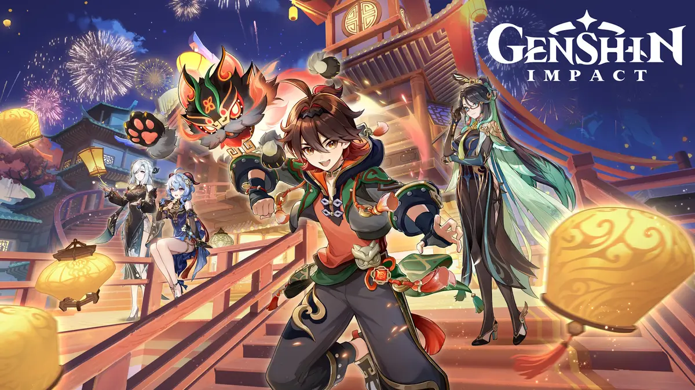
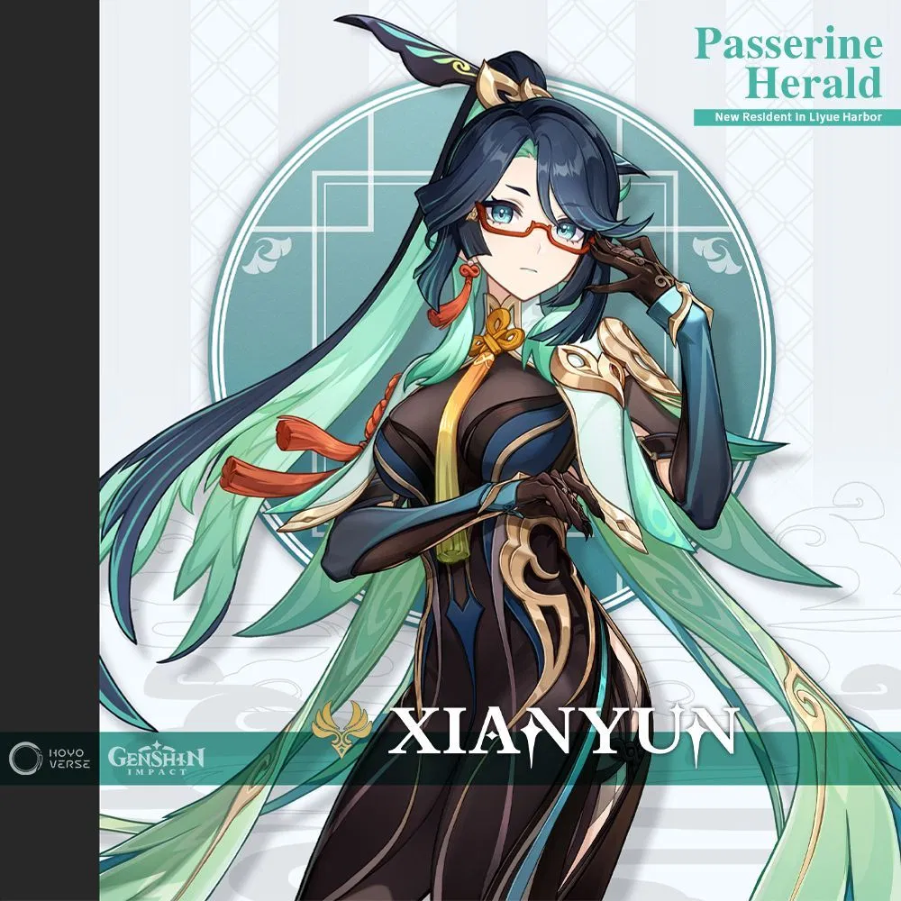
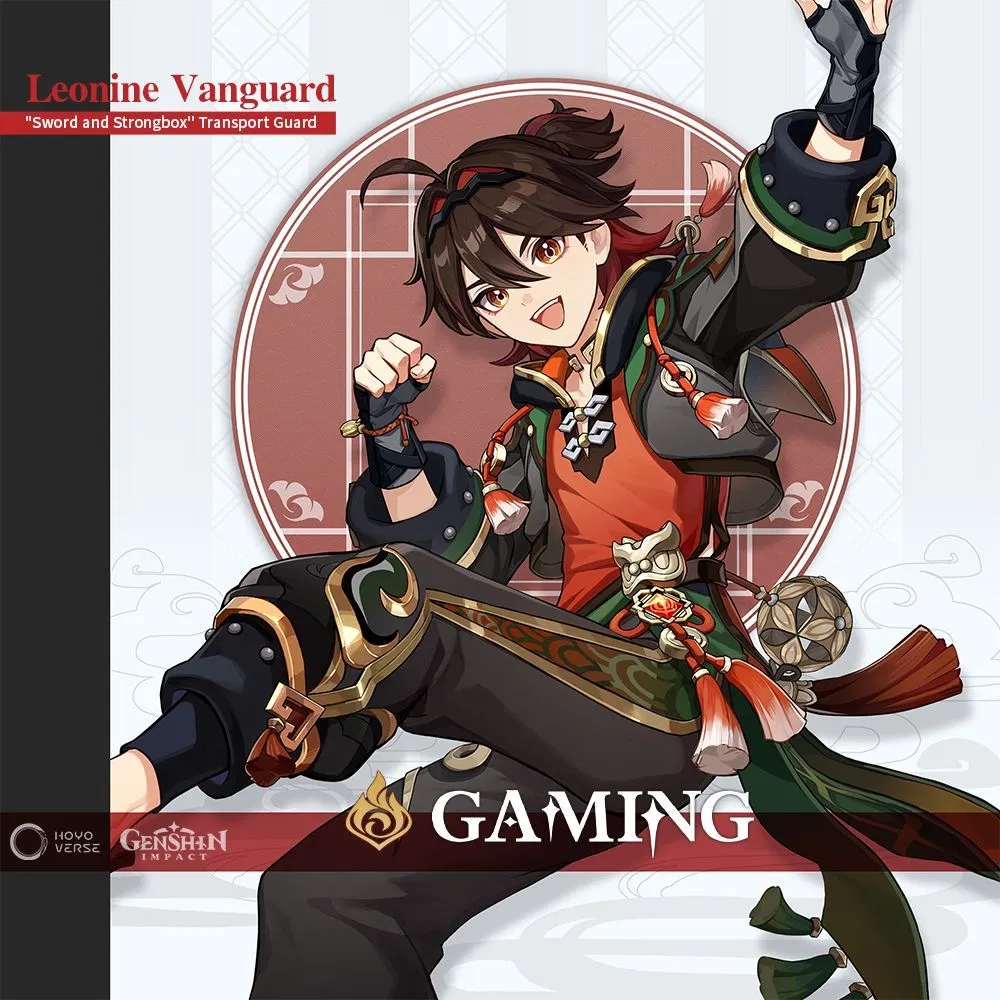

Xianyun (Chinese: 闲云 Xiányún), also known by her adeptus name Cloud Retainer, is a playable Anemo character in Genshin Impact. Curious about what draws her disciples to Liyue Harbor, she has taken up residence in the city to see for herself.
Best Xianyun Weapons
| Weapon | Stats | |
|---|---|---|
| 1st | Crane's Echoing Call | Base ATK: 741, Bonus Stat: ATK 16.5% |
| 2nd | Skyward Atlas | Base ATK: 674, Bonus Stat: ATK 33.1% |
| 3rd | Lost Prayer to the Sacred Winds | Base ATK: 608, Bonus Stat: CRIT Rate 33.1% |

Yip Gaming (Cantonese: 叶嘉明 Yip Ga Ming) is a playable Pyro character in Genshin Impact. Born in Qiaoying Village, Gaming left after an impasse with his father to pursue his passion and become a professional Wushou dancer, training constantly to make the dance popular throughout Teyvat
Best Gaming Weapons
| Weapon | Stats | |
|---|---|---|
| 1st | Serpent Spine | Base ATK: 510, Bonus Stat: CRIT Rate 27.6% |
| 2nd | Redhorn Stonethresher | Base ATK: 542, Bonus Stat: CRIT DMG 88.2% |
| 3rd | Beacon of the Reed Sea | Base ATK: 608, Bonus Stat: CRIT Rate 33.1% |